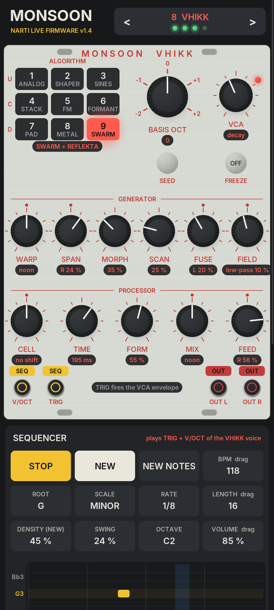
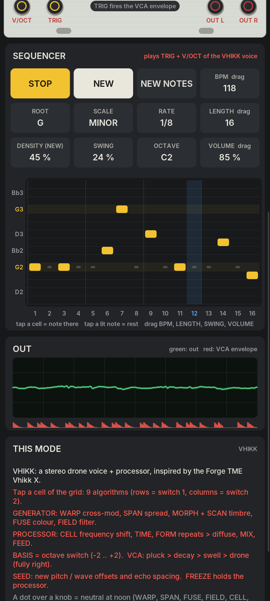

Flash from this page
The update travels as audio: this page plays it into the Monsoon. Unofficial firmware, use at your own risk.
- Unplug all cables. Headphone out → Monsoon IN L.
- Hold FREEZE and power on: the LEDs show the bootloader.
- Volume high, notifications off, press Play.
- Wait about 5½ minutes — the module restarts on its own.
More details
- Use a 3.5 mm stereo → mono cable (or an adapter plus a patch cable). IN LEVEL fully up helps.
- No Bluetooth, no other sounds, keep this tab in front.
- If it fails, power off and on with FREEZE held, then play again from the start.
- Going back to the stock Monsoon firmware: pick “Original Parasites” and flash it the same way. Saved buffers are kept.
Ready. The file (31.9 MB) loads when you press Play.
What it is
VHIKK
A drone voice and processor highly inspired by the Forge TME Vhikk X: pairs, sine clusters, wavetables, chord clusters.
One page
Every function on its own fader or knob. SPAN, FUSE and SCAN with the LED button held.
One cable
New notes at V/OCT fire the VCA, so a single pitch CV (the Plaits AUX out) plays it. TRIG wins when patched.
Plus
CAVERN, the processor on its own for any input, and a stereo phaser. The original modes stay.
VHIKK on the panel
Faders
- POSITION TIME · delay length 20 ms – 0.8 s, glides
- DENSITY CELL · frequency shift in the loop, none at noon
- SIZE MORPH · timbral scan | LED held: SCAN
- TEXTURE FORM · repeats → metallic / diffuse
Knobs
- TUNE BASIS · octave switch −2 … +2
- WET MIX · generator ↔ processor
- STER WARP · cross modulation | LED held: SPAN
- FBK FEED · none at noon, two kinds of shifter mix
- RVB FIELD · low-pass ↔ high-pass | LED held: FUSE
Buttons and jacks
- LED button tap = next algorithm (LEDs 1–3 show the two switches) · hold = shift · 2.5 s still = mode select
- LOAD/SAVE tap = SCAN to the next table set
- FREEZE tap = SEED (new offsets and echo spacing) · hold 1 s = freeze the processor
- V/OCT the note; every new note fires the VCA 2 ms after the jump. The same note twice does not retrigger
- TRIG when it gets pulses, TRIG alone fires the VCA (V/OCT only sets the pitch). Nothing for 3 s = drone
- IN L / R straight into the effects, not through the voice’s filter or VCA
Nine algorithms: 1 analogue pair · 2 waveshaping pair · 3 sine cluster · 4–6 four-oscillator wavetables · 7 diatonic cluster · 8–9 clusters, each into a DUNGEON (metallic) or REFLEKTA (diffuse) delay. Every control with a sound example: the visual manual.
All modes
Mode select: press the LED button and LOAD/SAVE together (or hold the LED button 2.5 s). LOAD/SAVE = next mode, LED button = previous.
| Mode | LEDs | ||
|---|---|---|---|
| 1 | Granular | unchanged | |
| 2 | Pitch / stretch | unchanged | |
| 3 | Looping delay | unchanged | |
| 4 | PHASER | new: stereo phaser, 2–12 stages | |
| 5 | MI reverb | unchanged | |
| 6 | Resonator | unchanged | |
| 7 | CAVERN | new: Vhikk X-inspired space for any input | |
| 8 | VHIKK | new: Vhikk X-inspired voice + processor |
Android app
The same firmware code on your phone, with a 16-step generative sequencer playing it: NEW, NEW NOTES, root, four minor scales, rate, length, density, swing. In the app every VHIKK function has its own knob and the nine algorithms are a 3 × 3 grid. In the other modes the sequencer plays the VHIKK voice into the input.
Download the app (.apk, 0.8 MB)
Android 8 or newer. Allow installing from your browser or file manager when Android asks.


Downloads
Checksums and changes
wav 300049d151d364f745c2990a080d57508461d130d3fc7ccd36698b5b863108f5
bin 4bccdaaba9168d2d4328dc23ed0d9cd55380dde81e9c294870aa718651607ebd
apk d1dfbc39a8af331767771a0349f804167e75a96a1a7d6a486d97d79262adacbe
restore fe1216bc45efdf1371ca46dff154769b83200cbe015be7ad2328dea3dfd47e96
- v1.6
- Cleaner, hi-fi VHIKK: band-limited wavetables with 96 harmonics (no aliasing fizz), 2× oversampled waveshaper, gentle analogue drift, subtle built-in saturation, a clean limiter instead of soft clipping. Every algorithm and knob position at a similar level (automatic level matching).
- v1.5
- VHIKK: TUNE is an octave switch, new notes at V/OCT fire the VCA (TRIG wins when patched), the audio inputs only go through the effects.
- v1.4
- VHIKK mode: nine algorithms, one control per function.
- v1.2
- CAVERN: TIME and CELL glide without clicks.
- v1.1
- CAVERN mode.
- v1.0
- Stereo phaser instead of the spectral mode.
Built from the Monsoon Parasites source (Clouds by Emilie Gillet, Parasites by Matthias Puech, Monsoon port by Tom Burns), MIT license. CAVERN and VHIKK are original Narti Live code inspired by the Forge TME Vhikk X; not affiliated with Forge TME, After Later Audio or Mutable Instruments.
By Narti Live
Also: DUB STAB PLAITS, dub techno chord firmware for Mutable Instruments Plaits — its AUX pitch out can play VHIKK with one cable.